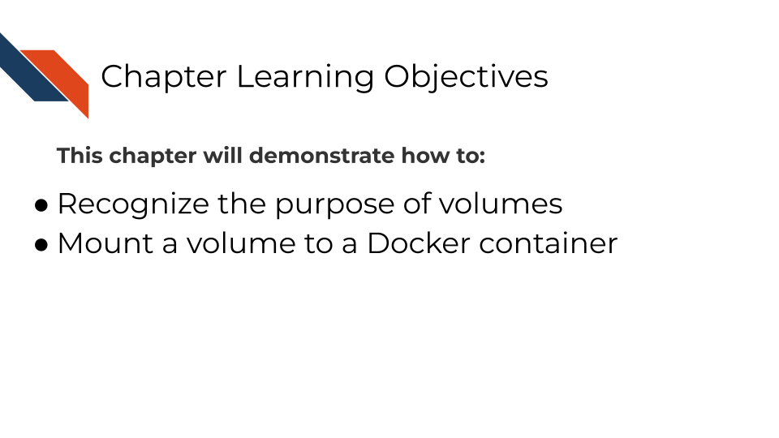
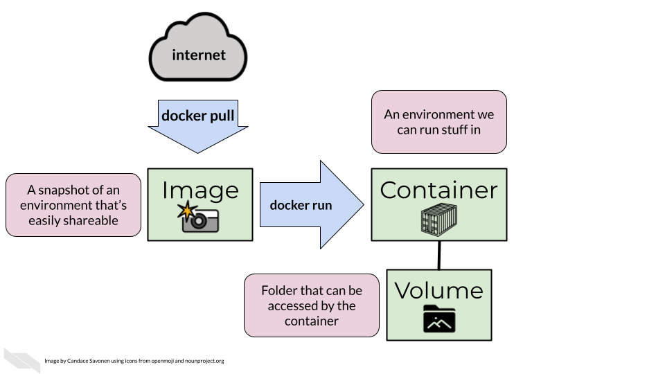
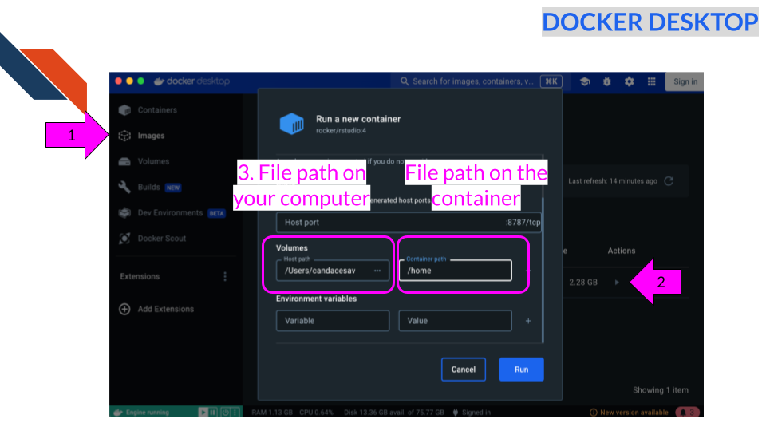
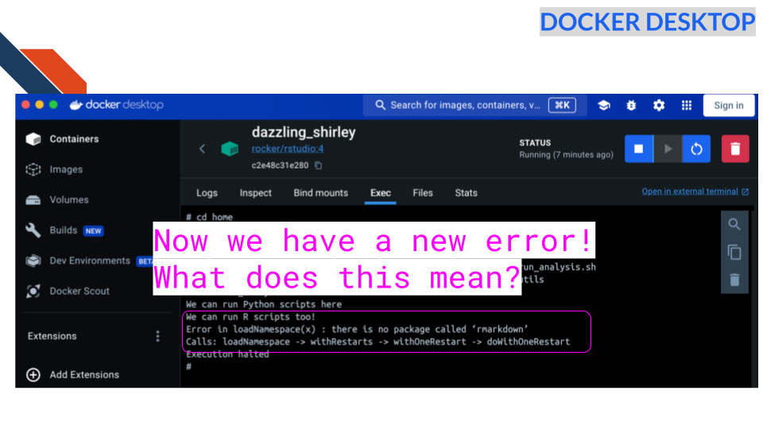
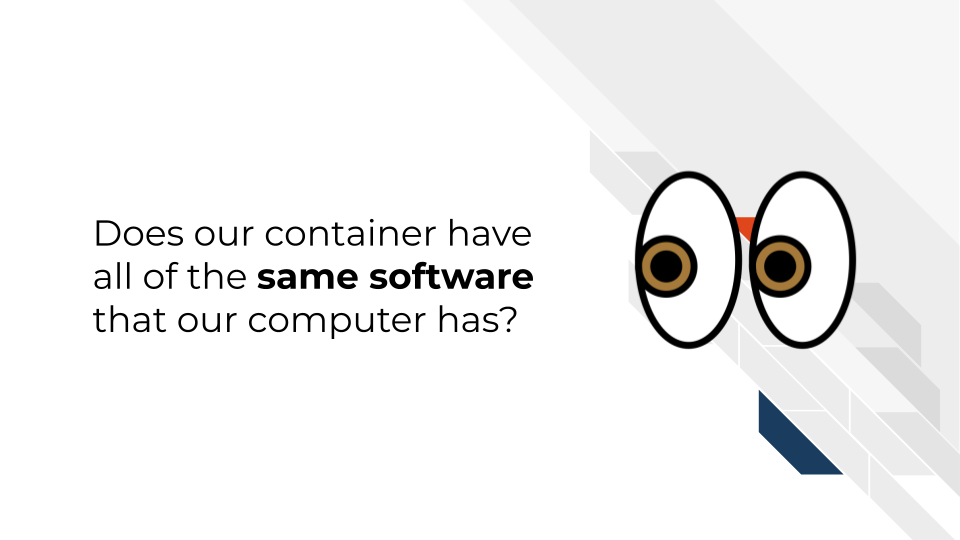
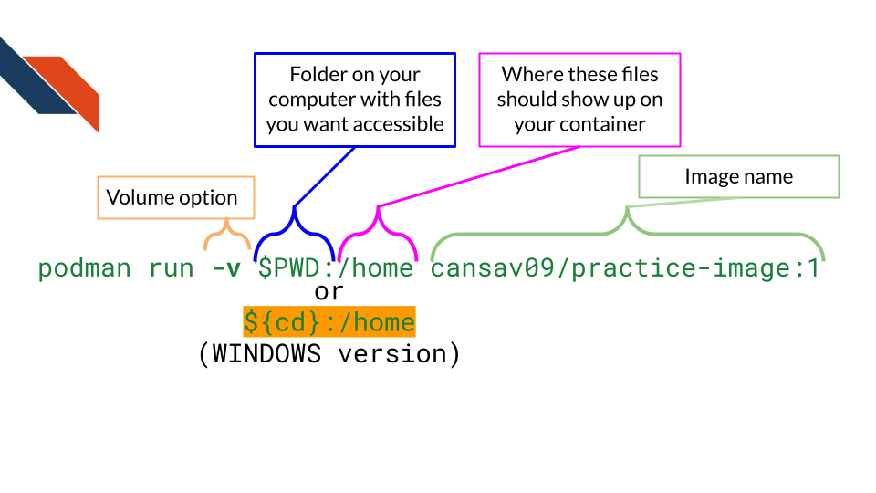

4 Using Volumes
In the last chapter we saw that we were using a container but were unable to access files we needed. We were trying to call the run_analysis.sh script but the isolation of containers that makes them useful also means that we didn’t have this script on our container.
So how do we get files we need onto a container we are using?
There are a few options:
- We could run our container and within that we could download the files we need from online! For example we could
git clonefiles from a repository or otherwisewgetorcurlfiles that are stored online somewhere.
- We could
COPYa file on to the docker image when we are building it (more on this next chapter). But we want to be careful with this strategy for two reasons:- We don’t want our image to be too big. So, this strategy can be fine if the file is small and something we know will always be needed for any use of the container.
- We DEFINITELY need to avoid ever having protected data on images that are shared. NEVER put protected data on images that we are sharing – more on this later too.
- We don’t want our image to be too big. So, this strategy can be fine if the file is small and something we know will always be needed for any use of the container.
- Lastly we can add a
volumeof files that are local to our computer. We’ll dive into this strategy in this chapter. This will probably be the most common way you’ll use to get access to files on your container.
What is a volume? A volume is a folder, likely from your computer, that can be accessed by your container.

I think of volumes like portals:
The portal/volume can be opened when you RUN the container. And when you stop and delete the container the portal is no longer there. But its a way that your container can access and modify files on your computer for the time being.
4.1 Activity Instructions
4.1.1 Docker
Our container is separate from our computer so if we want to use a file from our computer we have to attach it using a “volume”.
4.1.1.0.1 Step 1: Let’s add our containers-for-scientists-sandbox files
Let’s point a volume to our workshop files so we have them on our container.
We can specify a particular file path on our computer or give it $PWD. Then optionally we can give a : and a file path where we’d like it to be stored on the container. Otherwise it will be stored at the absolute top of the container. Note that $PWD is a special environment variable that stores the absolute path of the current working directory. You will need to be in the containers-for-scientists-sandbox-main for this to work.
Now we can run:
docker run -v $PWD:/home cansav09/practice-image:1If you have a windows machine you may have to run this variant instead. This version has a different ${} around the pwd part.
docker run -v ${pwd}:/home cansav09/practice-image:1In Docker desktop you can specify a portal like this:

4.1.1.1 Step 2: Retry calling the script
Now we can run the following command but we will have to run docker ps and get the container ID we need to put here.
docker exec -it <REPLACE_WITH_CONTAINER_ID> bash /home/run_analysis.shor in the exec tab of the container in Docker desktop app, run
bash /home/run_analysis.sh
Now we have a new error! What does this mean?
Question: Does our container have all of the same software that our computer has?

4.1.2 Podman
Our container is separate from our computer so if we want to use a file we have to attach it using a “volume”.
4.1.2.0.1 Step 1: Let’s add our containers-for-scientists-sandbox files
Let’s point a volume to our workshop files so we have them on our container.
We can specify a particular file path on our computer or give it $PWD Then optionally we can give a : and a file path we’d like this to be stored on on the container. Otherwise it will be stored at the absolute top of the container.
Now we can run:
podman run -v $pwd:/home cansav09/practice-image:1If you have a windows machine you may have to run this variant instead. This version has a different ${} around the pwd part.
podman run -v ${pwd}:/home cansav09/practice-image:1
4.1.2.1 Step 2: Retry calling the script
Now we can run the following command but we will have to run podman ps and get the container ID we need to put here.
podman exec -it <REPLACE_WITH_CONTAINER_ID> bash /home/run_analysis.shNow we have a new error:
Error in loadNamespace(x): There is no package called 'rmarkdown'What does this mean?
Question: Does our container have all of the same software that our computer has?